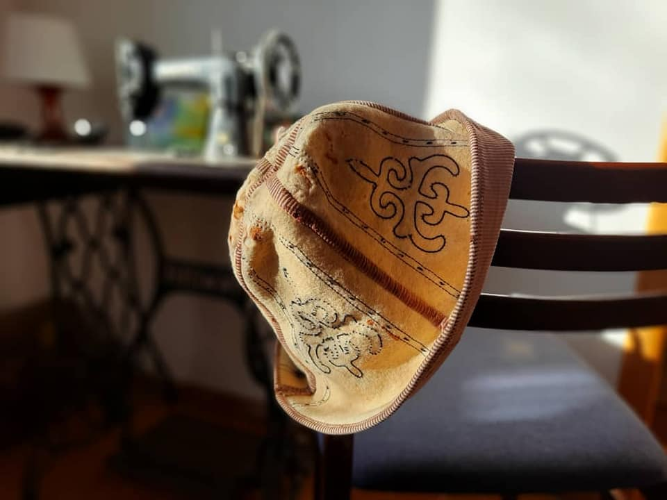

{% extends 'main/base.html' %}
{% block title %}
about test
{% endblock %}
{% block content %}

Калпак
"Мирлан на "Свет аке" был вторым режиссёром, в чьи обязанности входит подготовка актёров. И он все время просил меня, как исполнителя роли, чтобы я освоил монтерские когти, научился взбираться на электрический столб. Я откладывал, где-то внутренне чувствовал, при необходимости, смогу это сделать. На сложные съёмки предполагалось, что у меня будет дублер и готовили каскадера Мурата Бурханова, он параллельно снимался в охране Бекзата (Асхата Сулайманова).
К сцене, когда пьяный Свет аке лезет на столб, чтобы сделать замыкание и, таким образом, приблизиться к своей заветной мечте иметь сына, разумеется, мы готовили дублера. Хасан Кыдыралиев из Алматы привёз на два дубля пиротехнический пакет, который специальным приспособлением мог в нужный момент взорваться. Мурат, перевоплотившись в новый образ, полез на столб, а когда приблизился к проводам и потянулся руками, по команде сработал взрыв пакет. Мощная искра озарила округу, и, якобы от удара током, он повис на страховом поясе, зацепившись за столб. Редко получаешь такое удовольствие от съёмки, радость всколыхнула меня, даже монтеры-консультанты были в восторге: "Как настоящее замыкание!" Вдруг засуетились каскадеры, быстро начали ставить лестницы и с трудом спустили беспомощного Мурата. Оказывается, у него обгорели руки и он не мог за что-либо держаться. Руки покрылись сплошными волдырями, кое-где кровоточило. Могло быть хуже... Когда поднимал руки к проводам, он, на всякий случай, опустил голову и прикрыл лицо калпаком. И это его спасло, он мог ослепнуть. Я преклоняюсь перед стойкостью Мурата, который до команды "стоп" не издал ни звука и, несмотря на ужасную боль, доиграл сцену.
Калпак обгорел, он был своего рода раритетом, снимавшимся во многих кыргызких фильмах, и художник по костюмам Инара Абдиева со своей командой с трудом вернули его к съёмкам.
Мурату нужно было какое-то время на лечение, а работа продолжалась, и мне пришлось самому на когтях подниматься вверх по столбу. Мирлан после мимикой дал понять: "как заправский монтер".
{% endblock %}